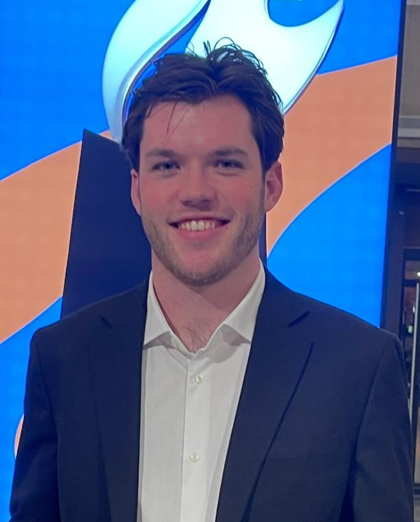
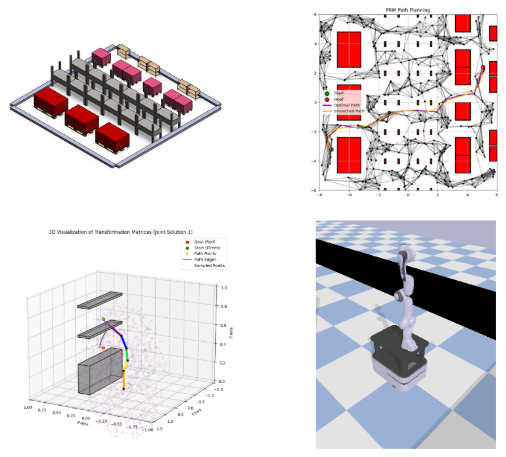
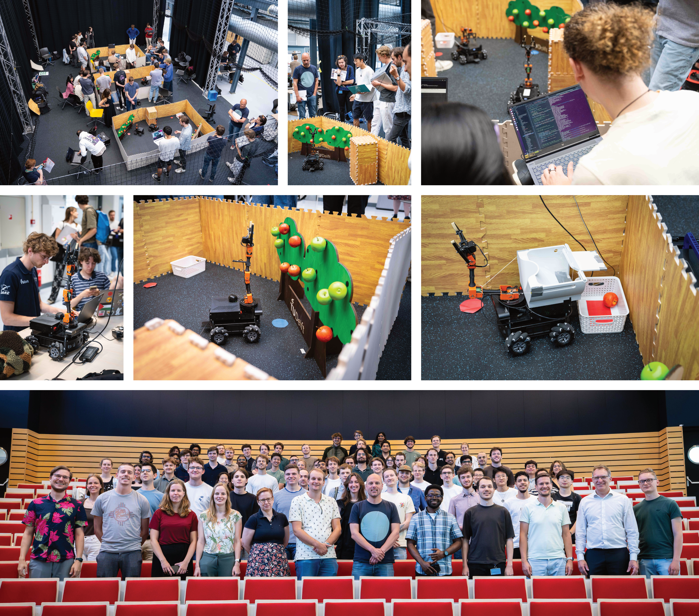
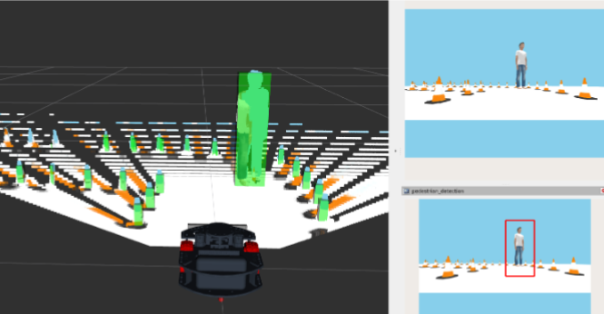
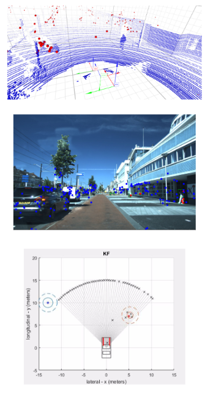

Rick de Graaf
Robotics EngineerMSc Robotics student at Delft University of Technology with hands-on experience in autonomous systems, computer vision, and AI gained at Siemens RTD DT & AI. Skilled in Python, ROS, and PyTorch, with a proven track record of developing robotic prototypes and automated perception pipelines. Seeking graduate/junior engineer roles in robotics, mechatronics, software and AI in London Area from September 2026.

Skills
A high-level overview of the tools, frameworks, and core engineering concepts I utilize to solve complex robotics problems.
Software & Frameworks
Python, C++, Bash, Git, Docker, ROS, ROS2, PyTorch, SolidWorks
Languages
Native Dutch, Fluent English
Experience
Research Engineer Intern
Siemens Digital Industries Software
Developed an automated semantic scene understanding pipeline on nuScenes and internal datasets using state-of-the-art VLMs, RAG, and Chain-of-Thought reasoning. Implemented in PyTorch with CUDA and Docker, featuring a prompted scene retrieval system for semantic text-based search. Built an automated 3D detection and tracking labeling pipeline leveraging multi-view monocular reconstruction and segmentation to accelerate autonomous driving scene annotation.
Teaching Assistant
Delft University of Technology
Instructed and mentored students on the implementation of ROS (Robot Operating System) and Python for a Bachelor’s Robotics course. Provided technical support for custom circuits and PID controllers, and assessed final projects, including an autonomous package delivery robot.

Summer Intern
Shell Renewables
Investigated the use of Rare Earth Elements (REEs) in wind turbines, conducting a data analysis of material usage from major suppliers (GE, Siemens, Vestas) and exploring potential alternatives, concluding with a final pitch of key findings to the Renewables team.
MSc Thesis: Advancing Real2Sim for High-Fidelity 3D Reconstruction
This research focused on creating high-fidelity digital twins of large-scale urban environments for Siemens' Real2Sim pipeline. By leveraging Gaussian Splatting methods, geometric supervision, and semantically efficient distillation combined with a divide-and-conquer approach, we achieved a scalable, camera-only workflow for producing simulation-ready digital twins.
Key Contributions:
- Camera-Only Workflow: Scalable 3D scene representation eliminating the need for complex multi-sensor setups.
- Divide-and-Conquer Scaling: Intelligent chunk-based processing and merging to handle massive urban environments.
- High-Fidelity Digital Twins: Geometric Gaussian Splatting for photorealistic and physically accurate simulation environments.
- Semantic Distillation: Efficient feature distillation to embed semantic understanding directly into the 3D representation.
- Real-World Validation: Rigorous evaluation using data captured from Siemens' internal multi-sensor acquisition vehicles.

Projects
Autonomous SLAM Navigator
Tech: ROS2, C++, LiDAR, Gazebo
Developed a full software stack for a differential drive robot to map unknown environments. Implemented a custom implementation of the A* pathfinding algorithm integrated with the Nav2 stack, allowing the robot to dynamically recalculate paths when obstacles were introduced to the physical test course.
View Repository →
6-DOF Robotic Arm Controller
Tech: Python, Inverse Kinematics, Arduino
Engineered a Python-based graphical interface to control a physical 6-axis robotic arm. The project required writing a custom inverse kinematics solver from scratch using Denavit-Hartenberg parameters to translate XYZ Cartesian coordinates into exact joint angles sent to the motor drivers.
View Repository →
Computer Vision Object Tracker
Tech: OpenCV, Python, YOLOv5
Designed a real-time object tracking system capable of identifying and following specific tools on a workbench. The system processes camera feeds at 30 FPS and outputs bounding box coordinates to a serial port, which were subsequently used to orient a pan-tilt camera mechanism.
View Repository →
Computer Vision Object Tracker
Tech: OpenCV, Python, YOLOv5
Designed a real-time object tracking system capable of identifying and following specific tools on a workbench. The system processes camera feeds at 30 FPS and outputs bounding box coordinates to a serial port, which were subsequently used to orient a pan-tilt camera mechanism.
View Repository →
Computer Vision Object Tracker
Tech: OpenCV, Python, YOLOv5
Designed a real-time object tracking system capable of identifying and following specific tools on a workbench. The system processes camera feeds at 30 FPS and outputs bounding box coordinates to a serial port, which were subsequently used to orient a pan-tilt camera mechanism.
View Repository →
Education
MSc in Robotics
Delft University of Technology
GPA: 8.13/10
Relevant Coursework: Computer Vision, Machine Learning, Planning & Decision Algorithms, Robot Operating Software, Human Robot Interaction, Robotic Dynamics & Control, Autonomous Vehicles.
Bachelor’s Exchange Program
University of Waterloo, Canada
GPA: 8.54/10
Relevant Coursework: Optimization, Computer Programming, and Electromechanical Design.
BSc in Mechanical Engineering
Delft University of Technology
GPA: 8.99/10 (Top 0.4%)
Relevant Coursework: Fundamentals in Calculus, Linear Algebra, Systems and Control, Integrated System Design, Dynamics, and Robotic Fundamentals.
Bachelor’s End Project: Developed a tactile gripper with impedance control for delicate grasping of fruits, demonstrating proficiency in robotic design, prototyping, and testing.
Contact
I am currently open to new opportunities in robotics engineering. Whether you have a position available, want to collaborate on an open-source project, or just want to discuss autonomous systems, my inbox is open.